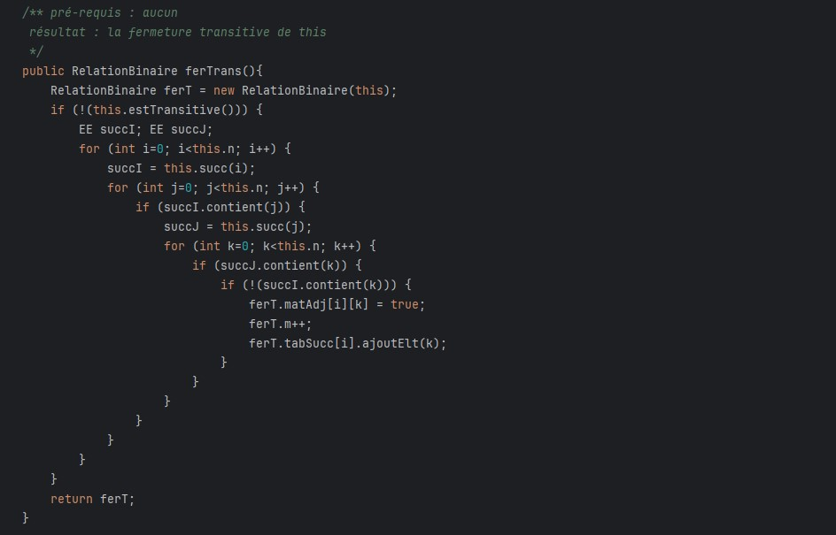
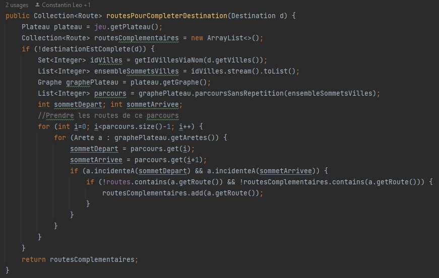
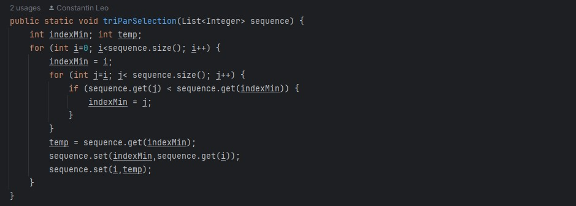
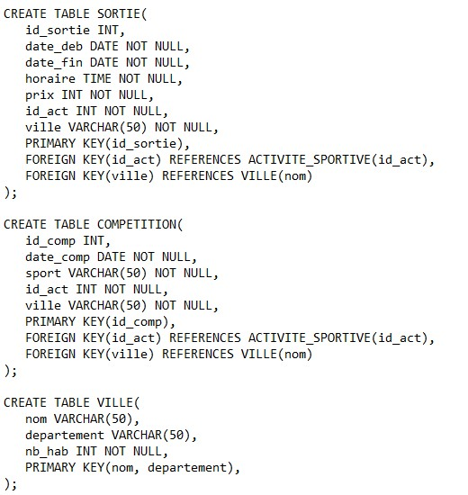
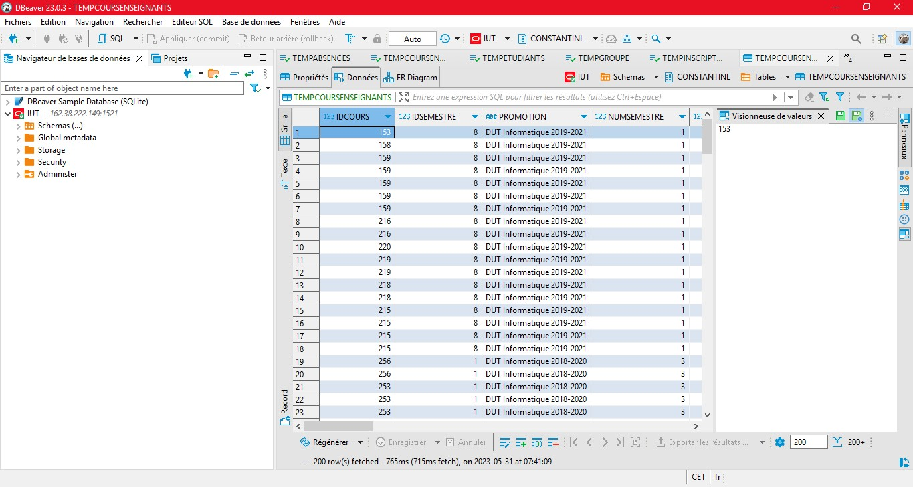

Bienvenue sur mon Portfolio d'Apprentissage !
Ici, vous retrouverez les projets que j'ai réalisé en lien avec chaque compétence mineure de mon parcours, à savoir DACS. Vous pouvez d'ailleurs y naviguer rapidement via les liens ci-dessous :
COMPÉTENCE 2 - Optimiser des applications
A la fin de ma deuxième année de BUT Informatique, je dois savoir analyser un problème avec méthode, comparer des algorithmes pour des problèmes classiques, ou encore formaliser et mettre en oeuvre des outils mathématiques pour l’informatique. Cela permet alors de proposer des applications informatiques optimisées en fonction de critères spécifiques, et plus précisément, d’appréhender et construire des algorithmes. A travers ces apprentissages, je dois être en capacité de répondre aux problèmes rencontrés en formalisant et modélisant des situations complexes, en recensant les algorithmes et les structures de données usuels, en justifiant les choix, ou encore en validant les résultats. L’un des objectifs principaux de tout ce processus est de limiter l’impact environnemental d’une application informatique.
SAE 1.02 – Comparaison d’approches algorithmiques
Durant la première année, cette SAE nous a permis d’analyser un problème avec méthode, mais également de formaliser et mettre en oeuvre des outils mathématiques pour l’informatique. Effectivement, cette SAE était portée sur les relations binaires qui était l’une des notions abordées dans le module « Mathématiques Discrètes ».
Par binôme, nous devions programmer les formules vues en cours sur les relations binaires. D’autres notions étaient abordées, telles que les matrices par exemple.
Au vu de la complexité de la tâche, nous ne pouvions pas programmer de tête. Ainsi, nous avons dû nous appuyer sur des schémas de raisonnement pour avancer avec sûreté.
Sur la capture d’écran, nous distinguons une fonction permettant d’effectuer la fermeture transitive d’une relation binaire.
De ce fait, nous avons mis en place une application informatique adaptée et innovante, si l’on doit se rapporter à une situation professionnelle.
Personnellement, cette SAE m’a beaucoup plu, et j’y ai été énormément investi. Puisque j’ai aimé la partie de raisonnement pour trouver la solution à chaque fonction.
SAE 2.02 – Exploration algorithmique d’un problème
Lors du deuxième semestre de mon cursus, cette SAE a poussé le raisonnement algorithmique plus loin. Effectivement, celle-ci est une nouvelle fois basée sur l’utilisation d’outils mathématiques, ainsi que sur l’analyse de problème avec méthode. Mais, elle compare également des algorithmes pour des problèmes classiques.
Cette SAE est portée sur une version en graphes des Aventuriers du Rail. Pour faire simple, chaque route correspond à une arête et chaque ville correspond à un sommet. Nous obtenons donc des graphes, et c’est ce sur quoi nous avons programmé. Elle a donc permis de formaliser et modéliser une situation complexe, via la programmation orientée objet en Java.
Par binôme, nous nous sommes appuyés sur des schémas de raisonnement durant de longues périodes, afin d’avancer avec plus de facilité.
Les différentes captures d’écran montrent les méthodes programmées concernant les algorithmes de tri, ou encore les algorithmes de graphes mis directement en lien avec le plateau du jeu.
Nous avons alors réalisé une application informatique adaptée et innovante.
Cette SAE était aussi très intéressante à travailler à travers sa complexité.
COMPÉTENCE 4 - Gérer des données de l’information
A l’issue de ma première année de BUT Informatique, je dois savoir mettre à jour et interroger une base de données relationnelle, visualiser des données, ou encore concevoir une base de données relationnelle à partir d’un cahier des charges, afin d’assurer un bon pilotage de l’entreprise. La conception et la mise en place d’une base de données à partir d’un cahier des charges client doit respecter les réglementations sur le respect de la vie privée et la protection des données personnelles, s’appuyer sur des bases mathématiques, et doit aussi assurer la cohérence ainsi que la qualité. Ceci a notamment pour mission d’exploiter des données pour la prise de décisions.
SAE 1.04 – Création d’une base de données
Dans cette SAE, il a fallu concevoir et mettre en place une base de données à partir d’un cahier des charges client. Pour cela, nous étions par groupe de quatre étudiants. Un groupe nous a donné leur texte descriptif du contenu de la base de données qu’ils souhaitaient avoir : celle d’une association sportive. A partir de celui-ci, nous avons créé des tables (voir capture d’écran ci-dessous) et inséré des données dedans, tout en assurant la cohérence et la qualité.
Seulement une partie de la création des tables apparaît ci-dessous.
Dans un contexte professionnel, cette création de base de données aurait été le lancement d’un nouveau projet.
SAE 2.04 – Exploitation d’une base de données
Lors du second semestre, nous avons étudié les base de données de façon plus avancée.
Dans cette SAE, nous avons mis à jour et interrogé une base de données relationnelle, ici Oracle, tout en respectant les enjeux économiques, sociétaux et écologiques de l’utilisation du stockage de données, ainsi que les différentes infrastructures.
Mais ce n’est pas tout. Tout d’abord, nous avons eu à concevoir un modèle entité/association à partir de données qui étaient rangées dans des tableurs. Puis, à partir de ce modèle entité/association, il a fallu créer les scripts permettant de créer les tables qui accueilleront toutes les données des tableaux. Une fois les scripts réalisés, nous avons continué sur DBeaver qui est un logiciel permettant d’administrer les bases de données, et de faire des requêtes envers une base de données. Néanmoins un problème a été rencontré : certaines données n’était pas cohérentes. Ainsi, nous avons trouvé l’astuce de créer des tables temporaires (voir capture d’écran ci-dessous), puis d’interroger ces tables via des requêtes pour insérer les bonnes données dans les tables finales. Nous avons alors suivi la feuille de route pour l’utilisation de DBeaver, et les données se sont alors insérées.
Il s’agit ici du lancement d’un nouveau projet et de l’exploitation des données pour la prise de décisions. Puisque dans un contexte professionnel, le fait de passer de données rangées dans des tableurs à des données rangées dans une base de données qui leur est dédiée est un gros projet.
Grâce à cette SAE, j’ai énormément appris sur les bases de données, et surtout sur DBeaver. Honnêtement j’ai trouvé le processus long, mais efficace pour recenser une grande quantité de données.
COMPÉTENCE 5 - Conduire un projet
Au terme de ma deuxième année de BUT Informatique, je dois être capable d’appréhender les besoins du client et de l’utilisateur, ou même d’identifier les acteurs et les différentes phases d’un cycle de développement. Cela doit me permettre d’identifier les besoins métiers des clients et des utilisateurs tout en communiquant efficacement avec les différents acteurs d’un projet, mais aussi en sensibilisant à une gestion éthique, responsable, durable et interculturelle. Grâce à ce niveau, il est possible de lancer un nouveau projet dans un cadre professionnel.
SAE 1.05 – Recueil de besoins
Durant le premier semestre, cette SAE a permis d’identifier les besoins métiers des clients et des utilisateurs. Effectivement, par groupe de quatre étudiants, nous devions imaginer un escape game. Un autre groupe concevait par la suite le site web de l’espace game que nous avions imaginé. Nous avons donc eu à appréhender les besoins du client et de l’utilisateur, afin de correspondre au mieux à leurs attentes.
D’ailleurs, pour ce qui est des attentes du client, donc les attentes de l’autre groupe, nous sommes allés directement communiquer avec eux afin de récupérer le maximum d’informations.
Le groupe qui nous a été prescrit souhaitait un escape game au sein d’un opéra, avec certaines missions précises. Il a fallu ainsi imaginer de multiples salles afin de faire voyager les joueurs dans l’opéra qui nous avait été demandé.
Voici un aperçu du site web que nous avons réalisé :
![[Image Site Web Escape Game]](../ressources/img/escapegame.jpg)
Il a été difficile d’avancer sur cette SAE, car le groupe qui nous avait été prescrit n’était pas souvent présents afin de nous donner les renseignements qu’ils souhaitaient. Ils nous ont seulement donné ce qu’ils souhaitaient absolument voir apparaître dans leur escape game, et nous l’avons conçu.
Ce que j’ai bien aimé, c’était la cohésion que nous avions dans notre groupe. Et cela m’a apprit à travailler efficacement en équipe.